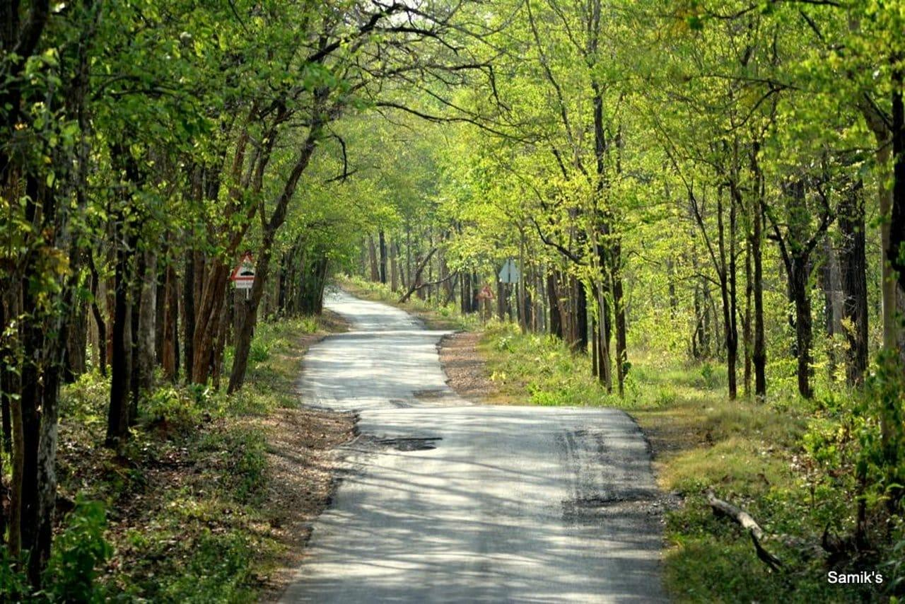
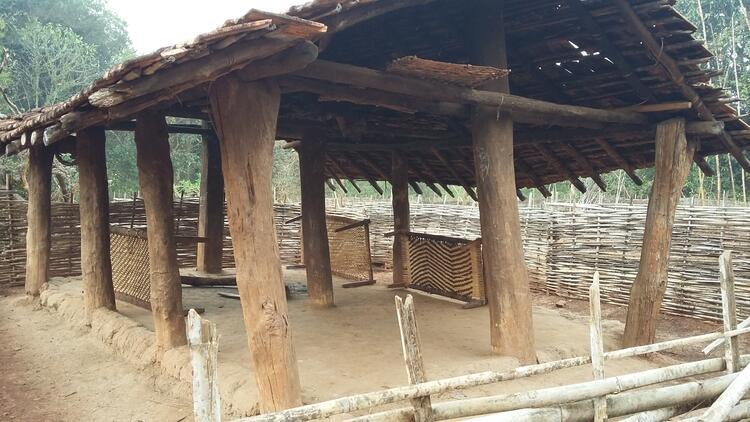
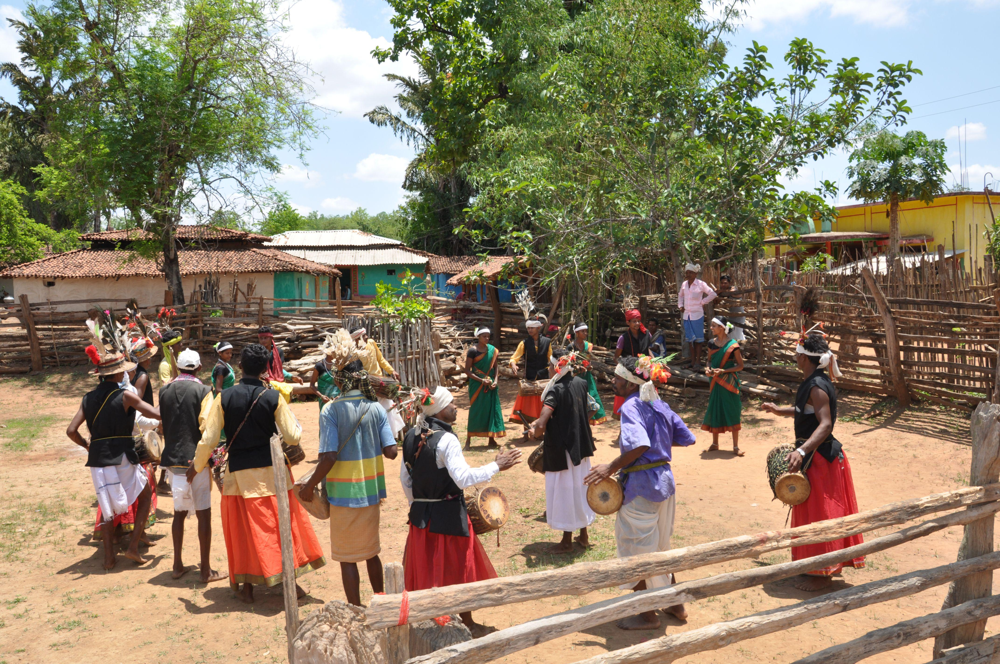
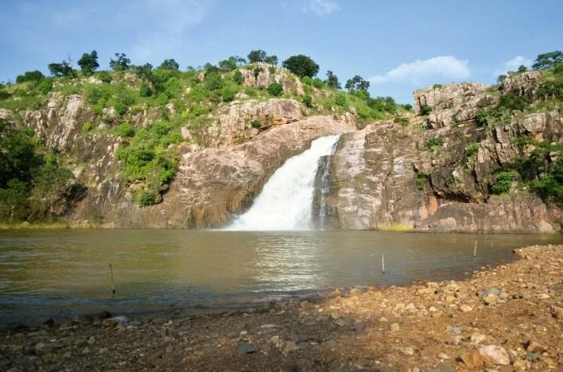
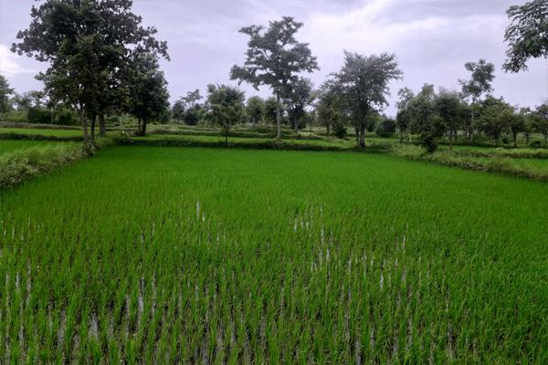
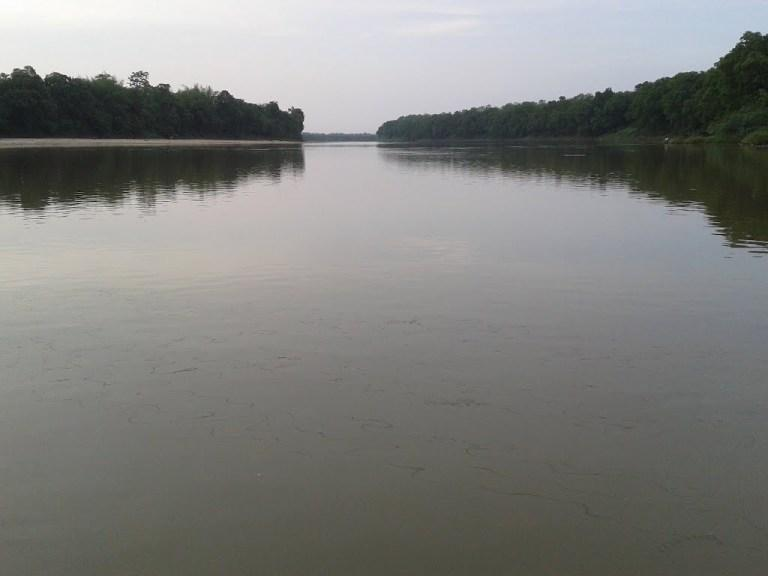
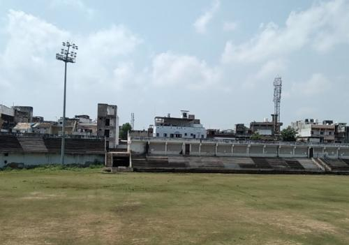

About

Gondia serves as the administrative headquarters for the eight talukas within the district. The region derives its name from the indigenous Gondi tribal population that has historically inhabited the area. Strategically located at the easternmost tip of the state, the city acts as a vital commercial and transit hub, bridging Maharashtra with its central Indian neighbors.
- Location:Northeastern tip of Maharashtra, bordering Madhya Pradesh and Chhattisgarh.
- Famous as:The "Rice City of India" and the "District of Lakes."
History

The region has been ruled by the Gond, Bhonsle, and Maratha empires. Gondia's major turning point occurred during the Great Famine of 1876–1878, which prompted the British to build the Nagpur Chhattisgarh Railway line. The opening of the Gondia railway station in 1888 transformed the agrarian outpost into a booming commercial center.
- Gondia is a vibrant district tucked away in the northeastern corner of Maharashtra, right on the border of Madhya Pradesh and Chhattisgarh. Widely celebrated as the "Rice City of India" and the "District of Lakes," it is famous for its massive rice milling industry and hundreds of scenic, historic water tanks. This beautiful region beautifully blends lush green forests and rich tribal culture with bustling transit links, making it a unique hub for both nature lovers and local trade.
Culture

Gondia's culture is a vibrant fusion of indigenous Adivasi traditions and Maratha influences. The local tribes hold a deep reverence for deities like "Persa Pen" and celebrate unique festivals with traditional folk dances. Additionally, the district hosts diverse communities, including a notable Tibetan refugee settlement in Gothangaon, which features a prominent Buddhist temple.
- Main Festivals:Diwali, Dussehra, Holi, Ganesh Chaturthi, and Pola.
- Traditional Arts:Gond tribal paintings, folk dances, and bamboo crafts.
- Language:Marathi and Hindi are spoken by most people.
Tourism

Gondia is a haven for history and nature enthusiasts, often called the "District of Lakes" due to its ancient Malguzari tanks. Key attractions include the spectacular Kachargadh Caves, the cascading Hazra Falls, and the wildlife-rich Navegaon National Park. For heritage seekers, the 15th-century Hemadpanthi-style Shiva Temple in Nagra is a must-visit.
- Navegaon National Park: A beautiful forest reserve with a peaceful lake, jungle safaris, and a famous bird sanctuary.
- Kachargadh Caves: 25,000-year-old natural caves hidden in dense forests, popular for trekking and tribal worship.
- Hazra Falls: A scenic waterfall surrounded by rocky hills and green woods, perfect for monsoon picnics.
Famous Food

The local cuisine is strongly influenced by both Maharashtrian and Vidarbha traditions, heavily utilizing local produce, particularly the staple premium rice. Traditional dishes include spicy Saoji curries, Pithla Bhakri, and regional preparations of river fish. Rice-based snacks, steamed delicacies, and robust lentils form the core of the everyday Gondia diet.
- Famous Food:Spicy Vidarbha-style Saoji chicken or mutton curries served with flatbread.
- Local Specialty:Pithla Bhakri, river fish curry, and premium aromatic Chinnor rice.
Economy

The economy of Gondia is predominantly agrarian, with rice cultivation and rice milling acting as the backbone of the region's trade. The district also has a flourishing forest-based economy, heavily reliant on the collection of tendu leaves for bidi manufacturing and various timber products. Over the past decade, the district's Gross Domestic Product has steadily grown, driven by local trade and commerce.
- Key Industries:Rice milling, tendu leaf collection (for bidi making), bamboo crafts, and thermal power generation at Tiroda.
- Main Crops:Paddy (rice), sugarcane, wheat, linseed, and pulses like tur and gram.
Environment

Gondia's environment is characterized by lush, deciduous forests, undulating hills, and the fertile basins of the Wainganga River and its tributaries. The region boasts a highly rich biodiversity, providing natural habitats for various flora and fauna. Extensive indigenous water conservation systems, known as Malguzari tanks, play a crucial role in balancing the local ecosystem.
- Climate:Tropical climate with hot summers up to 45°C, a heavy rainy season from June to September, and mild winters.
- Key Rivers:The Wainganga River is the main river, along with its tributaries like the Bagh, Bavanthadi, Chulbandh, and Garhvi rivers.
- Protected Areas: Navegaon National Park, Nagzira Wildlife Sanctuary, and the combined Navegaon-Nagzira Tiger Reserve.
Sports

Sports in Gondia are deeply integrated into youth culture and community events, heavily dominated by regional passion for cricket. The district administration and local sporting clubs regularly organize tournaments, promoting grassroots talent. Traditional rural games such as Kabaddi and Kho-Kho also enjoy immense popularity across the district's towns and villages.
- Traditional Sports:Kabaddi, Kho-Kho, wrestling (Dangal), and Atya Patya.
- Focus:Developing youth talent, building community spirit, and boosting rural cricket tournaments.